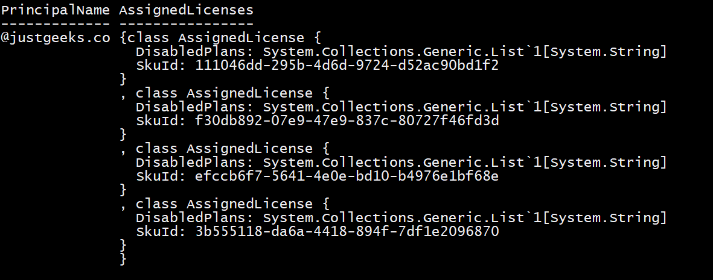
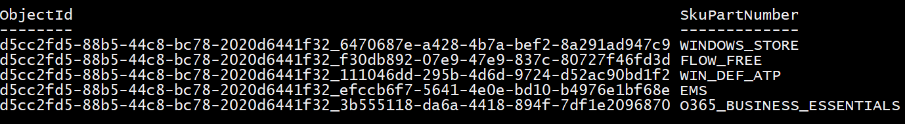

Export O365 User License Report with friendly names
I was recently tasked with exporting a report for a client that detailed all users, their location and license assignment in Office 365. I knew the best way to get the job done was by writing a PowerShell script.
I did a quick search online and found lots of examples, however all the examples I found were using the deprecated “Microsoft Online” / MSOL PS module. I wanted to use the Azure AD module instead so I played around a bit to get the output I wanted.
The boss also wanted the export to have the “Friendly” license names not the esoteric sku names that Microsoft uses on the backed. I found this handy article here that lists sku names with their current product names. So a quick hashtable will take care of that for us.
First problem, how do we come up with what licenses are assigned to each user? First I connected to AzureAD then ran
Get-AzureADUser | Get-Member -membertype Properties
One of the first properties I noticed was “Assigned Licenses”, so I thought great! Lets try outputting that. Next command I ran:
Get-AzureADUser -objectid dave@justgeeks.co | select userprincipalname,assignedlicenses | Format-Table -AutoSize -Wrap
To my dismay, this was the output:
Not exactly what I had in mind. Ok, we need to do a little conversion. I found this cmdlet “Get-AzureADSubscribedSku” which gives this output:
Ok cool, I can work with that. Looks like the ObjectID is TenantID_SkuID. SkuPartNumber is the actual Sku name.
Here is the script I came up with
# Get Tenant ID
$TenantID = Get-AzureADTenantDetail | select -ExpandProperty ObjectID
# Get list of licensed users
$users = Get-AzureADUser -all $true | where assignedlicenses -ne $null
# Hash table to convert sku names to freindly license names
$skus = @{
"AAD_PREMIUM" = "AZURE ACTIVE DIRECTORY PREMIUM P1"
"AAD_PREMIUM_P2" = "Azure Active Directory Premium P2";
"INTUNE_A" = "Intune";
"O365_BUSINESS_ESSENTIALS" = "Microsoft 365 Business Basic";
"SPE_E3" = "Microsoft 365 E3";
"SPE_E5" = "Microsoft 365 E5";
"THREAT_INTELLIGENCE" = "Microsoft Defender for Office 365 (Plan 2)";
"POWERAPPS_VIRAL" = "Microsoft Power Apps Plan 2 Trial";
"FLOW_FREE" = "Microsoft Power Automate Free";
"TEAMS_EXPLORATORY" = "Microsoft Teams Exploratory";
"DESKLESSPACK" = "Office 365 F3";
"POWER_BI_STANDARD" = "Power BI (free)";
"PROJECTPROFESSIONAL" = "Project Plan 3";
"VISIOCLIENT" = "Visio Plan 2";
"WINDOWS_STORE" = "WINDOWS STORE FOR BUSINESS";
"SHAREPOINTSTORAGE" = "SharePoint Online Storage";
"RIGHTSMANAGEMENT" = "AZURE INFORMATION PROTECTION PLAN 1"
"RMSBASIC" = "Rights Management Basic";
"MICROSOFT_BUSINESS_CENTER" = "Microsoft Business Center";
"MICROSOFT 365 APPS FOR BUSINESS" = "SMB_BUSINESS"
}
$i = 1
$UserLicenseList = [System.Collections.Generic.List[PsObject]]::new()
foreach ($user in $users)
{
Write-progress -activity "Processing" -Status "Working on: $($user.displayname)" -PercentComplete (($i / $users.count) * 100)
$licenses = ($user).assignedlicenses.skuid | foreach { (Get-AzureADSubscribedSku -ObjectID ($($TenantID) + '_' + $_)).skupartnumber } | foreach {
$skus[$_]
}
$UserLicenseList.add([PSCustomObject]@{
DisplayName = $user.displayname
UserPrincipalName = $user.UserPrincipalName
StreetAddress = $user.StreetAddress
licenses = $licenses -join ','
})
$i++
}
Let’s break it down.
# Get Tenant ID
$TenantID = Get-AzureADTenantDetail | select -ExpandProperty ObjectID
# Get list of licensed users
$users = Get-AzureADUser -all $true | where assignedlicenses -ne $null
First, I get the tenant ID since I know that the tenant ID is part of the AzureADSubscribedSku object ID. Then I get the list of licensed users.
# Hash table to convert sku names to freindly license names
$skus = @{
"AAD_PREMIUM" = "AZURE ACTIVE DIRECTORY PREMIUM P1"
"AAD_PREMIUM_P2" = "Azure Active Directory Premium P2";
"INTUNE_A" = "Intune";
"O365_BUSINESS_ESSENTIALS" = "Microsoft 365 Business Basic";
"SPE_E3" = "Microsoft 365 E3";
"SPE_E5" = "Microsoft 365 E5";
"THREAT_INTELLIGENCE" = "Microsoft Defender for Office 365 (Plan 2)";
"POWERAPPS_VIRAL" = "Microsoft Power Apps Plan 2 Trial";
"FLOW_FREE" = "Microsoft Power Automate Free";
"TEAMS_EXPLORATORY" = "Microsoft Teams Exploratory";
"DESKLESSPACK" = "Office 365 F3";
"POWER_BI_STANDARD" = "Power BI (free)";
"PROJECTPROFESSIONAL" = "Project Plan 3";
"VISIOCLIENT" = "Visio Plan 2";
"WINDOWS_STORE" = "WINDOWS STORE FOR BUSINESS";
"SHAREPOINTSTORAGE" = "SharePoint Online Storage";
"RIGHTSMANAGEMENT" = "AZURE INFORMATION PROTECTION PLAN 1"
"RMSBASIC" = "Rights Management Basic";
"MICROSOFT_BUSINESS_CENTER" = "Microsoft Business Center";
"MICROSOFT 365 APPS FOR BUSINESS" = "SMB_BUSINESS"
}
Then I created a hashtable to map the sku names to their friendly names.
$i = 1
$UserLicenseList = [System.Collections.Generic.List[PsObject]]::new()
foreach ($user in $users)
{
Write-progress -activity "Processing" -Status "Working on: $($user.displayname)" -PercentComplete (($i / $users.count) * 100)
$licenses = ($user).assignedlicenses.skuid | foreach { (Get-AzureADSubscribedSku -ObjectID ($($TenantID) + '_' + $_)).skupartnumber } | foreach {
$skus[$_]
}
Then the fun part, create a foreach loop.
For each user, create a progress bar to display the progress for processing each users licenses.
For each user, Transform the users Assigned Licenses / SkuID into the actual Sku name by feeding it in Get-AzureADSubscribedSku.
For each skuid, add the tenantID as Get-AzureADSubscribedSku is expecting “TenantID_SkuID”, then putll out the SkuPartNumber which was the sku name.
Then take the Sku name and transform it to the friendly name by using the corresponding index of the hashtable.
$licenses = ($user).assignedlicenses.skuid | foreach { (Get-AzureADSubscribedSku -ObjectID ($($TenantID) + '_' + $_)).skupartnumber } | foreach {
$skus[$_]
$UserLicenseList.add([PSCustomObject]@{
DisplayName = $user.displayname
UserPrincipalName = $user.UserPrincipalName
StreetAddress = $user.StreetAddress
licenses = $licenses -join ','
})
$i++
Finally, fill a list with the properties I want for the report. Notice I join the licenses for each user into a single string so that when I go to export the report the licenses will display correctly if the user has multiple assigned. Otherwise the output would just show [System.Object] as the output would be an array rather than a single string.
Then increment our counter by 1, $i being the counter.
Just to be extra diligent, lets get the total license list and count for the tenant:
$TotalLicenses = Get-AzureADSubscribedSku | Select -Property SkuPartNumber, @{ n = "Sku"; e = { $skus[$_.SkuPartNumber] } }, @{ n = "Used"; e = { $_.ConsumedUnits } }, @{ n = "Total"; e = { $_.prepaidunits.enabled } }
Now to export everything to an excel spreadsheet cause we are fancy, no simple csv here! Using the module ImportExcel:
# Export to Excel Spreadsheet
$TotalLicenses | Export-Excel -Autosize .\UserLicenseReport.xlsx -TableName "TotalLicenses" -Worksheetname "TotalLicenses"
$UserLicenseList | Export-Excel -Autosize \UserLicenseReport.xlsx -TableName "UserLicenseDetails" -Worksheetname "UserLicenseReport"
Here we create one excel spreadsheet “UserLicensesReport.xlsx” with two worksheets “TotalLicenses” and “UserLicenseDetails”. Each report being an autosized table on each worksheet.
And that’s it! In the next article, I will show how to automate these type of reports using certificate based authentication.